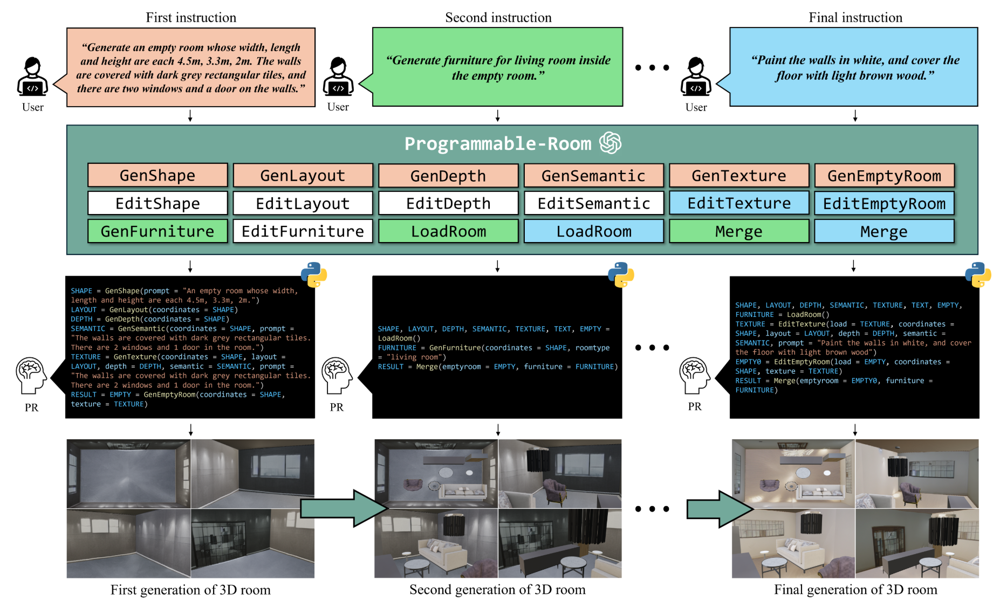
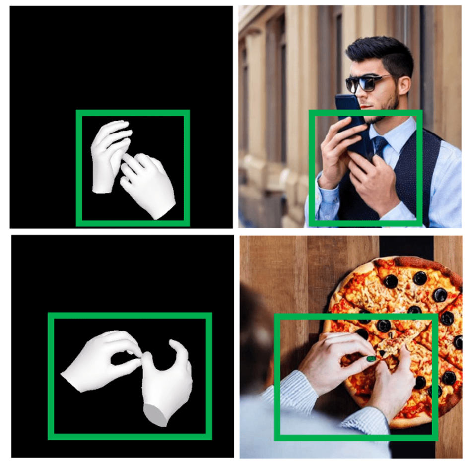
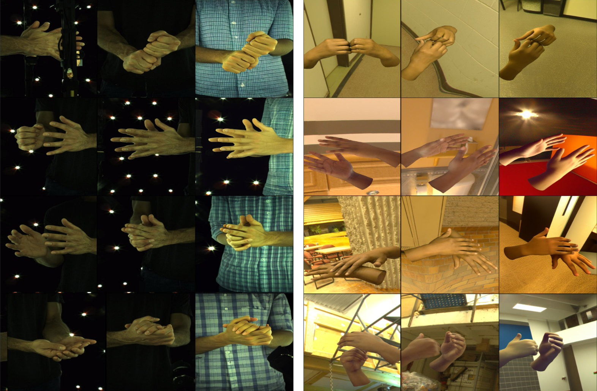
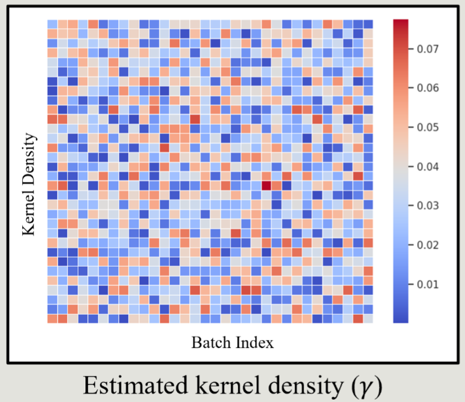
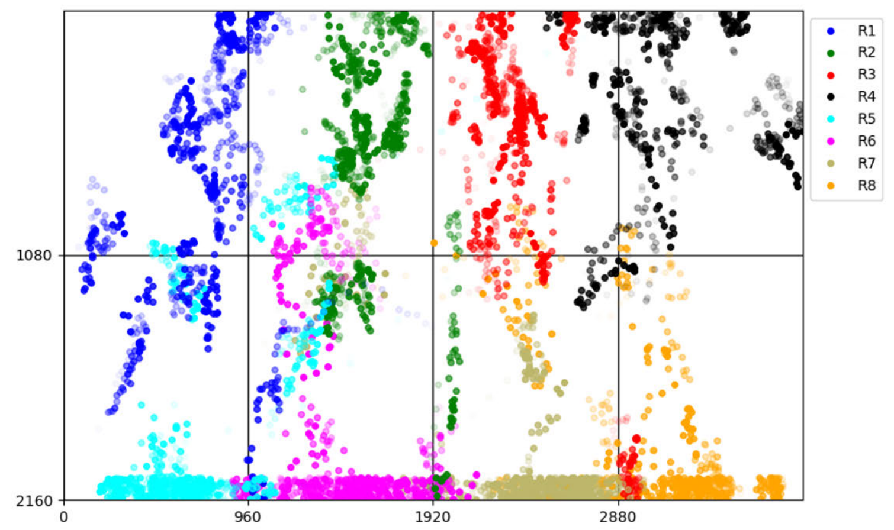

|
Junho Park
I'm an AI researcher in Vision Intelligence Lab, led by Jaechul Kim, at AI Lab, LG Electronics.
At LG Electronics, I've worked on Large-Scale Generative Datasets, Vision Foundation Models (e.g. Object Detection, Panoptic Segmentation, Depth Estimation, Pose Estimation, and Face Recognition), and On-Device (e.g. Lightweight Modeling and Quantization).
|

|
News |
|
[Jan. 2026] Our paper EgoWorld is accepted to ICLR 2026.
[Sep. 2025] Our papers Replace-in-Ego and GenEgo are accepted to ICCV 2025 Workshop. [Jan. 2025] Our paper Programmable-Room is accepted to IEEE TMM. [Sep. 2024] Our paper IRP is selected as Oral Presentation to ECCV 2024 Workshop. [Sep. 2024] Our papers IRP and IHPT are accepted to ECCV 2024 Workshop. [Aug. 2024] Our paper AttentionHand is selected as Oral Presentation to ECCV 2024. [Jul. 2024] Our paper AttentionHand is accepted to ECCV 2024. [Mar. 2024] I will start my AI researcher position at AI Lab, LG Electronics. [Feb. 2024] Our paper SEMixup is accepted to IEEE TIM. [Aug. 2023] Our paper HANDiffusion is accepted to ICCV 2023 Workshop. [Jun. 2023] Our paper SAAF is accepted to IEEE Access. |
Publications |
|
EgoWorld: Translating Exocentric View to Egocentric View using Rich Exocentric Observations
Junho Park, Andrew Sangwoo Ye, Taein Kwon† (†: Corresponding Author.) ICLR, 2026 Project Page / Paper We introduce EgoWorld, a novel two-stage framework that reconstructs egocentric view from rich exocentric observations, including depth maps, 3D hand poses, and textual descriptions. |
|
|
TransHOI: Implicit 3D-Aware Cross-View Translation for Hand-Object Interaction Generation
Junho Park*, Yeieun Hwang*, Suk-Ju Kang† (*: Equal Contribution, †: Corresponding Author.) Under Review, 2025 Paper (will be published) We introduce TransHOI, a novel framework for implicit 3D-aware image translation of hand-object interaction, aiming to generate images from different perspectives while preserving appearance details based on user's description of camera. |
|

|
Single Query to Bind Them: Unified Representations for Efficient Human Pose Estimation
Jonghyun Kim, Yubin Yoon, Bo-Sang Kim, Hyoyoung Kim, Junho Park, Jungho Lee†, Jaechul Kim† (†: Corresponding Author.) Under Review, 2025 Paper (will be published) We propose a novel method to explicitly encode bounding box and keypoint locations in a single query and learn their interactions through multi-head attention and feed-forward network. |
|
Replace-in-Ego: Text-Guided Object Replacement in Egocentric Hand-Object Interaction
Minsuh Song*, Junho Park*, Suk-Ju Kang† (*: Equal Contribution, †: Corresponding Author.) ICCV, 9th Workshop on Observing and Understanding Hands in Action, 2025 Paper We introduce a text-guided object replacement framework, Replace-in-Ego, which integrates a vision-language model (VLM)-based segmentation model with a diffusion transformer (DiT). |
|
|
Generating Egocentric View from Exocentric View via Multimodal Observations
Junho Park, Andrew Sangwoo Ye, Taein Kwon† (†: Corresponding Author.) ICCV, 9th Workshop on Observing and Understanding Hands in Action, 2025 Paper We introduce GenEgo, a novel two-stage framework that generates an egocentric view from multimodal exocentric observations, including projected point clouds, 3D hand poses, and textual descriptions. |
|
|  |
Programmable-Room: Interactive Textured 3D Room Meshes Generation Empowered by Large Language Models
Jihyun Kim*, Junho Park*, Kyeongbo Kong*, Suk-Ju Kang† (*: Equal Contribution, †: Corresponding Author.) IEEE TMM (Transactions on Multimedia, IF: 9.7), 2025 Project Page / Paper Programmable-Room interactively creates and edits textured 3D meshes given user-specified language instructions. Using pre-defined modules, it translates the instruction into python codes which is executed in an order. |
|  |
AttentionHand: Text-driven Controllable Hand Image Generation for 3D Hand Reconstruction in the Wild
Junho Park*, Kyeongbo Kong*, Suk-Ju Kang† (*: Equal Contribution, †: Corresponding Author.) ECCV, 2024 (Oral Presentation, Acceptance Rate: 2.3%) Project Page / Paper We propose a novel method, AttentionHand, for text-driven controllable hand image generation. The performance of 3D hand mesh reconstruction was improved by additionally training with hand images generated by AttentionHand. |
|
Interactive 3D Room Generation for Virtual Reality via Compositional Programming
Jihyun Kim*, Junho Park*, Kyeongbo Kong*, Suk-Ju Kang† (*: Equal Contribution, †: Corresponding Author.) ECCV, 3rd Computer Vision for Metaverse Workshop, 2024 (Oral Presentation) Paper We introduce a novel framework, Interactive Room Programmer (IRP), which allows users to conveniently create and modify 3D indoor scenes using natural language. |
|
|  |
Diffusion-based Interacting Hand Pose Transfer
Junho Park*, Yeieun Hwang*, Suk-Ju Kang† (*: Equal Contribution, †: Corresponding Author.) ECCV, 8th Workshop on Observing and Understanding Hands in Action, 2024 Paper We propose a new interacting hand pose transfer model, IHPT, which is a diffusion-based approach designed to transfer hand poses between source and target images. |
|  |
Mixup-based Neural Network for Image Restoration and Structure Prediction from SEM Images
Junho Park, Yubin Cho, Yeieun Hwang, Ami Ma, QHwan Kim, Kyu-Baik Chang, Jaehoon Jeong, Suk-Ju Kang† (†: Corresponding Author.) IEEE TIM (Transactions on Instrumentation and Measurement, IF: 5.9), 2024 Paper We present a new SEM dataset and a two-stage deep learning method (including SEMixup and SEM-SPNet) that achieve state-of-the-art performance in SEM image restoration and structure prediction under diverse conditions. |
|
A Novel Framework for Generating In-the-Wild 3D Hand Datasets
Junho Park*, Kyeongbo Kong*, Suk-Ju Kang† (*: Equal Contribution, †: Corresponding Author.) ICCV, 7th Workshop on Observing and Understanding Hands in Action, 2023 Paper We propose a novel framework, HANDiffusion, which generates new 3D hand datasets with in-the-wild scenes. |
|
|  |
Improving Gaze Tracking in Large Screens with Symmetric Gaze Angle Amplification and Optimization Technique
Joseph Kihoon Kim*, Junho Park*, Yeon-Kug Moon†, Suk-Ju Kang† (*: Equal Contribution, †: Corresponding Author.) IEEE Access (IF: 3.6), 2023 Paper We propose a novel gaze tracking method for large screens using a symmetric angle amplifying function and center gravity correction to improve accuracy without personalized calibration, with applications in autonomous vehicles. |
Experience |


|
Website template from Jon Barron. |